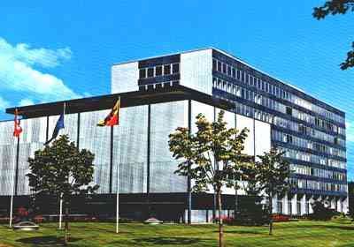
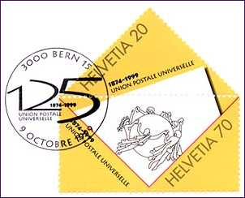
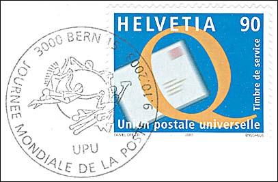
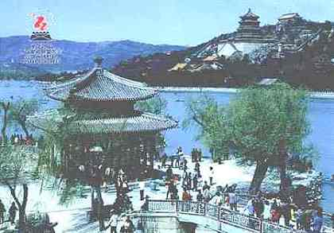
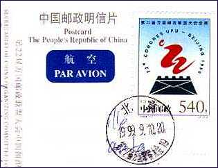

The Universal
Postal Union is a specialized agency of the
United Nations, united in a single postal
territory for the reciprocal exchange of correspondence. Nearly all independent nations
and various dependent territories are members. There are worldwide about 6.1 million
postal services and about 700 000 post offices, processing inland some 430 billion letters
and internationally almost 10 billion letters, printed items, parcels and newspapers. The
Universal Postal Union implements the provisions of the Universal Postal Convention,
adopted in 1874, which specifies the types of correspondence that may be transmitted
internationally; it prohibits mailing of certain articles and commodities, such as
narcotics; it provides a regulation for the redirection or return of correspondence that
cannot be delivered; it regulates payments when the mail goes through the territory of
several members; and it guarantees the freedom of transit throughout the entire Union.
|
 |
 |
|
UPU Building, opened May 20, 1970 |
125th anniversary of the UPU, 10/9/99 |
The organization was established the 9th of October, 1874 as the General Postal Union by the provisions of the convention signed by the representatives of 22 countries. This date is now celebrated throughout the world as World Postal Day. The name of Universal Postal Union (L'Union Postale Universelle) was adopted in 1878. In 1947 the UPU became a specialized United Nation's agency, responsible for international postal activities. Its headquarters is in Berne, the capital of Switzerland. In 2003 the Universal Postal Union counted as members 189 countries and territories, forming the largest distribution network in the world.
 |
The Swiss Post has issued the first stamps, for the exclusive use of the UPU, in 1957. Between 1957 and 1995 it issued only 16 different stamps, the second issue from 1960 still being in use. The stamps have the inscriptions: Helvetia and Union postale universelle and may be used for the correspondence only by the officials working for the UPU in Berne. The UPU doesn't possess its own postal office, and uses the Swiss postal office 3000 Bern 15.
|
 |
 |
| The 22nd UPU Congress in P.R. of
China
The postcard (The Summer Palace) issued by the Secretariat of China Organizing Committee. |
The stamp issued by the Chinese Postal Administration.
The next Congress will take place in Bucharest, Romania, in 2004 |
Background: Engraving by Karl Bickel, Zürich, Switzerland. Sculpture by René de St. Marceaux, Paris, France.
Links: